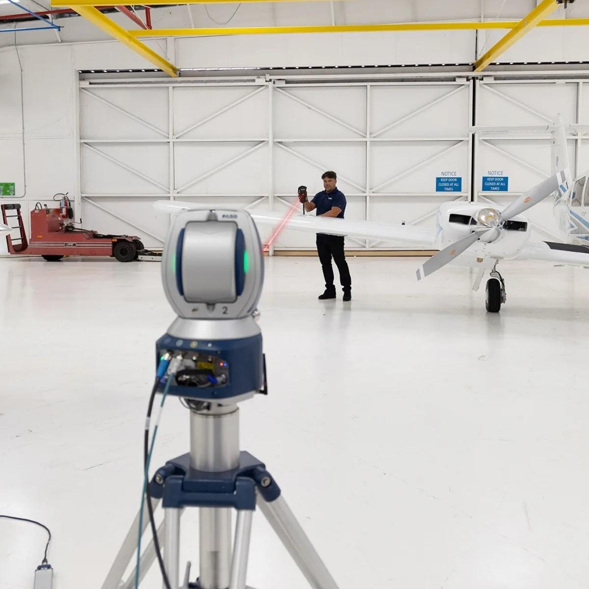
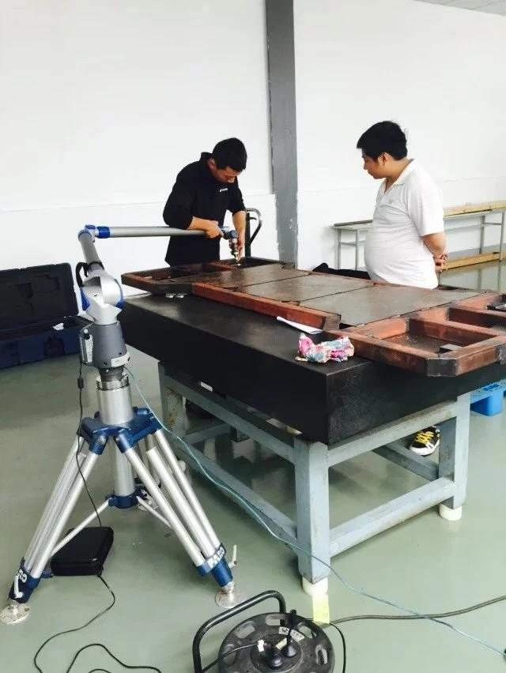
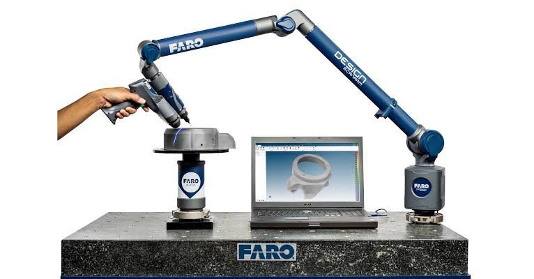
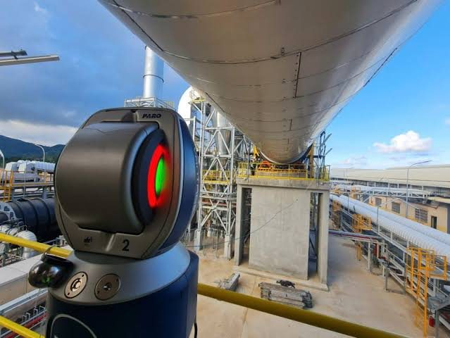

Our Vision
To be the global benchmark in precision measurement, enabling industries to achieve zero-tolerance quality through innovation.
Industrial Metrology · Chennai, India
Calibreco Technology is a premier Chennai-based provider of high-precision industrial dimensional metrology and 3D scanning solutions — delivering traceable inspection, alignment and GD&T analysis across aerospace, automotive and heavy engineering.

Who we are
We leverage advanced laser trackers, articulated CMM arms and state-of-the-art metrology software to deliver traceable measurement wherever the part lives — in our lab, on your shop floor, or on site.
Our engineers mobilise across India for on-site dimensional inspection, jig and fixture calibration, machine and shaft alignment, GD&T validation and reverse engineering — from single-shift call-outs to long-term contracts.
Padi, Chennai — 600050, Tamil Nadu, India
To be the global benchmark in precision measurement, enabling industries to achieve zero-tolerance quality through innovation.
Delivering uncompromised metrology solutions that empower world-class manufacturing precision and structural integrity.
Advancing measurement into the future with integrity, traceability and technical excellence in every project.
Core service pillars

3D laser scanning of complex geometries, with point-cloud to CAD deviation analysis and colour-map reporting.

Portable arm CMM inspection to ISO 10360-12 — tactile probing and optical scanning on your production floor.

Laser tracker measurement for large-volume parts, machine installation and shaft alignment up to 160 m.
Metrology on demand
Pick the instrument you need, choose a date and shift, and send the job through to our dispatch desk. We confirm within two business hours.
High-density point-cloud capture for plant layouts, piping and complex component inspection.
Large-volume spatial measurement and jig, fixture and machinery alignment.
On-site tactile probing and optical scanning, carried out on your production floor.
Geometric tolerance validation and parametric CAD reconstruction from scan data.
Availability shown is indicative and confirmed when we come back to you. For an urgent mobilisation call 96007 94700.
Detailed capabilities
| Service category | Technical details | Standard / range |
|---|---|---|
| 3D Laser Scanning | Deviation analysis & reverse engineering | Sub-micron accuracy |
| Laser Tracking | High-accuracy large volume measurement | Range: 160 m |
| Portable CMM Arm | 7-axis articulated arm | ISO 10360-12 |
| GD&T Analysis | Validation of geometrical tolerances | ASME Y14.5 / ISO |
| Reverse Engineering | Parametric 3D model reconstruction | STEP / IGES / Parasolid |
Multi-sector expertise
Turbine blade and airframe dimensional inspection.
Chassis and body-in-white alignment, jig and fixture calibration.
Roll stand and rolling mill alignment services.
Propulsion shaft alignment and hull measurement.
Turbine blade measurement and mould installation surveys.
Structural and block assembly inspection for shipyards.
Track alignment surveys, train body inspection and fixture calibration.
Machine installation, geometric setting and shaft alignment.
Customers we serve
Get in touch
On-site dimensional inspection, jigs & fixtures, reverse engineering — we mobilise across India.
WhatsApp has opened with your booking details — press send there and our metrology engineering team will confirm within two business hours.